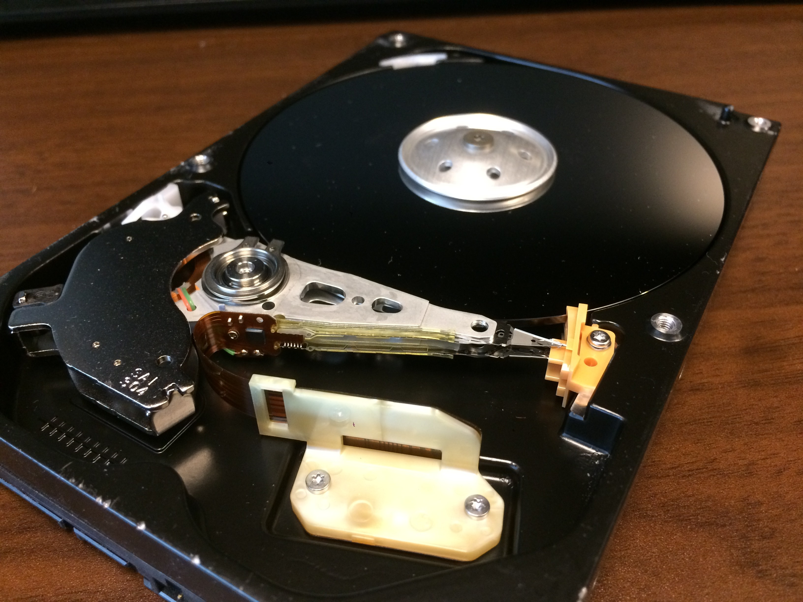
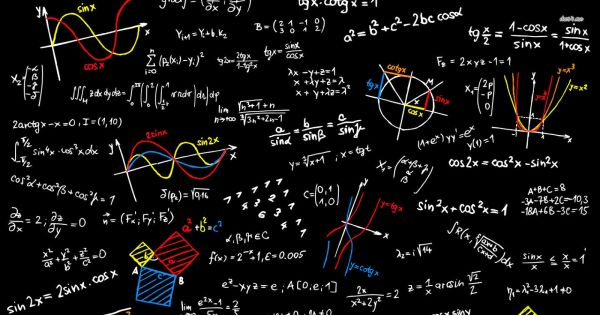

×
顯示下一層內容
Art
Engineering/Product
Technology
Science
Math
進階學習
高中生實驗
關於本網頁
一,趣味物理
遊戲機的物理
魔力棒球
璀璨的駐波
聲音與音樂的物理
立體視覺
帆船的物理
二,基礎物理
單擺與簡諧運動
奇妙的力學
角動量
磁性與磁懸浮
三,驚奇物理
電漿物理-日光燈到核融合
雷射筆的光學
絢麗的光學
RFID(射頻標籤)+條碼機
美妙的晶體
四,生活物理
GPS：生活中的相對論
生活中的電磁學
醫療物理
耳溫槍：生活中的量子物理
生活中的熱學
手機的物理
五,能源物理
太陽能
移動式電源
海洋發電
☰
中山大學物理系 STEAM 生活物理實驗演示
中山大學物理系 STEAM 生活物理實驗演示
苦背三年公式
不如動手做實驗
關於本網頁
一,趣味物理
遊戲機的物理
魔力棒球
璀璨的駐波
聲音與音樂的物理
立體視覺
帆船的物理
二,基礎物理
單擺與簡諧運動
奇妙的力學
角動量
磁性與磁懸浮
三,驚奇物理
電漿物理-日光燈到核融合
雷射筆的光學
絢麗的光學
RFID(射頻標籤)+條碼機
美妙的晶體
四,生活物理
GPS：生活中的相對論
生活中的電磁學
醫療物理
耳溫槍：生活中的量子物理
生活中的熱學
手機的物理
五,能源物理
太陽能
移動式電源
海洋發電
Art/藝術
Engineering/工程

Technology/技術
Science/科學

Mathematics/數學
進階學習
Experiment/高中生實驗
</div> <div class="appmode"> <a class="applink" href="../heading_pdf/science.pdf" target="_blank" >相關內容</a> </img> </img> <br> <br> </div> </body> </html>